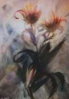

Waarom deze website?
Max Prantl heeft wezenlijke dingen te zeggen - geestelijke dingen, die het spirituele leven van ons mensen rechtstreeks raken - waar mensen meer over zouden moeten nadenken. Dat is in het verleden natuurlijk wel vaker het geval geweest, maar bij Prantl is het bijzondere, dat hij tijdens zijn leven en ook daarna in veel opzichten erg actief is tegengewerkt door de gevestigde orde, die zijn opmerkingen niet graag hoorde - wat bijna een zeker teken is dat zijn levenshouding en visie een voor het ware leven belangrijke “boodschap” inhouden. Zo is het immers alle profeten en andere spirituele vernieuwers vergaan. En in deze tijd is het internet een uitstekend middel om bekendheid te geven aan wat anders onopgemerkt zou blijven, vandaar.
Het doel van deze website is niet, Max Prantl te “leren kennen:” Daarvoor is de veelheid van zijn gedachten te veelomvattend en te diepgaand. Wie dat wil, zou werkelijk in alle rust zijn boeken moeten lezen en op zich in laten werken. Een internetpagina kan er enkel toe dienen, de aandacht op zijn persoon en werk te vestigen, waarna er wellicht bij enkelen de behoefte ontstaat er meer van te willen weten. Geestelijke groei voltrekt zich niet in een wereld van flitsende, snel wisselende beelden, maar in de stille momenten erna en ernaast.
Van zijn geschreven werk (een achttal boeken) is momenteel nog maar één boek in het Duits te krijgen. De overige zijn deels niet uitgegeven en voor het andere deel nooit herdrukt. Kort geleden werd Max Prantl's hoofdwerk 'Der Mensch ohne Angst - Licht aus der Herzmitte' opnieuw in het Duits uitgegeven. Inmiddels zijn in de afgelopen jaren voor het eerst de boeken in het Nederlands vertaald en zijn dankzij een goede geefster zijn de boeken nu in vier banden in het Nederlands uitgegeven: 'Het Stralende Hart', 'Onbegrepen Licht', 'Kerstrozen' en 'Astrologie'.
Zijn schilderijen - die stuk voor stuk het aanzien meer dan waard zijn, zelfs een hoog artistiek gehalte hebben - bevinden zich in privé-bezit, maar het zou zeker de moeite waard zijn hier bijvoorbeeld reproducties van te vervaardigen. U kunt de schilderijen wel als ansichtkaarten bestellen, of de afbeeldingen bekijken en opslaan op de pagina Ansichtkaarten.
Als u geraakt bent door het werk van Max Prantl, behoefte heeft aan meer informatie, of gelooft dat u iets bij kunt dragen dan horen wij dat graag! U kunt een bericht sturen naar info@maxprantl.nl.